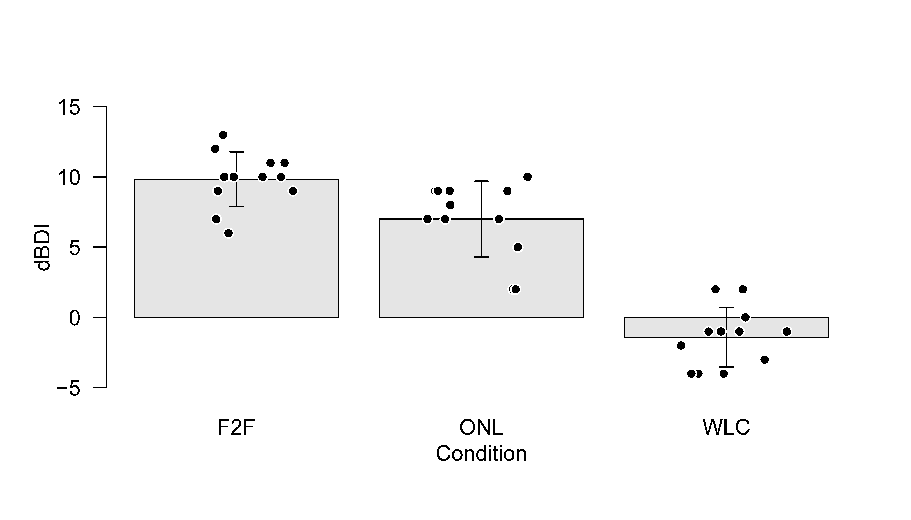
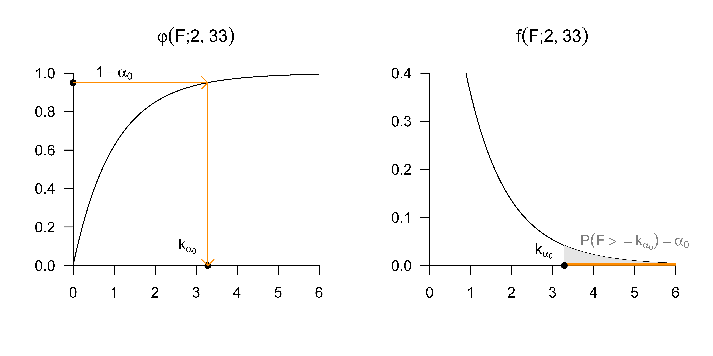

| COND | dBDI | |
|---|---|---|
| 1 | F2F | 9 |
| 2 | F2F | 7 |
| 3 | F2F | 10 |
| 4 | F2F | 11 |
| 13 | ONL | 2 |
| 14 | ONL | 7 |
| 15 | ONL | 9 |
| 16 | ONL | 9 |
| 17 | ONL | 8 |
| 25 | WLC | -1 |
| 26 | WLC | 2 |
| 27 | WLC | -3 |
| 28 | WLC | -1 |
| 29 | WLC | 0 |
41 One-way analysis of variance
41.1 Application scenario
The application scenario of one-way analysis of variance is characterized by \(n\) univariate data points from two or more groups of randomized experimental units that differ with respect to the levels of an experimental factor. If the number of data points in each group is the same, the design is also called a balanced one-way analysis-of-variance design. The data points of the \(i\)th group, or of the \(i\)th factor level, are assumed to be realizations of \(n_i\) independent and identically normally distributed random variables whose true, but unknown, expectation parameters may differ across groups and whose true, but unknown, variance parameter is identical across groups. In these basic assumptions, the one-way analysis-of-variance scenario is therefore a direct generalization of the one-sample and two-sample T-test scenarios to, potentially, more than two groups. Conversely, one-sample and two-sample T-test scenarios can of course also be viewed as one-way analysis-of-variance scenarios in which the experimental factor has only one or two levels, respectively. Finally, as in the case of T-test scenarios, one usually assumes that there is interest in an inferential comparison of the true, but unknown, factor-level-specific expectation parameters.
41.2 Application example
As a concrete application example, we consider the analysis of pre-post intervention BDI difference values from three groups of 12 patients each, who underwent different therapy settings, face-to-face and online, or a waitlist control condition, as illustrated in Table 41.1. The first column of the table (COND) lists the patient-specific therapy setting (F2F: face-to-face, ONL: online, WLC: waitlist control) for selected patients in each study group. The second column of the table (dBDI) lists the corresponding patient-specific pre-post intervention BDI difference values. Positive values again correspond to a decrease in depressive symptoms, negative values to an increase in depressive symptoms.
Figure 41.1 shows a visualization of the complete data set. The bars represent the group-specific sample means, the corresponding error bars represent the group-specific sample standard deviations. The point clouds represent the group-specific data points. In the F2F and ONL groups, the change in the BDI value is more pronounced than in the WLC group.

In Table 41.2, we summarize the descriptive statistics of the example data set, broken down by therapy conditions.
| n | Max | Min | Median | Mean | Var | Std | |
|---|---|---|---|---|---|---|---|
| F2F | 12 | 13 | 6 | 10.0 | 9.83 | 3.79 | 1.95 |
| ONL | 12 | 10 | 2 | 7.5 | 7.00 | 7.27 | 2.70 |
| WLC | 12 | 2 | -4 | -1.0 | -1.42 | 4.45 | 2.11 |
41.3 Model formulation
We first define the one-way ANOVA model in expectation-parameter representation. We use the index \(i\) to index the experimental groups and the index \(j\) to index the experimental units within the groups.
Definition 41.1 (One-way ANOVA model in expectation-parameter representation) For \(i=1,\ldots,p\) and \(j=1,\ldots,n_i\), let \(y_{ij}\) be random variables that model the \(n:=\sum_{i=1}^{p} n_i\) data points of a one-way ANOVA scenario. Then the one-way ANOVA model in expectation-parameter representation has the structural form \[\begin{equation} y_{ij}=\mu_{i}+\varepsilon_{ij} \mbox{ with } \varepsilon_{ij} \sim N\left(0, \sigma^{2}\right) \mbox{ i.i.d. with } \mu_{i} \in \mathbb{R}, \sigma^{2}>0, \end{equation}\] the data distribution form \[\begin{equation} y_{ij} \sim N\left(\mu_{i}, \sigma^{2}\right) \mbox{ independent with } \mu_{i} \in \mathbb{R}, \sigma^{2}>0, \end{equation}\] and, for the \(n\)-dimensional data vector defined as \[\begin{equation} y := \left( y_{11},\ldots, y_{1n_{1}}, y_{21},\ldots, y_{2n_{2}},\ldots, y_{p1},\ldots, y_{pn_{p}} \right)^{T}, \end{equation}\] the design-matrix form \[\begin{equation} y = X\beta+\varepsilon \end{equation}\] with \[\begin{equation} X:= \begin{pmatrix} 1_{n_{1}} & 0_{n_{1}} & \cdots & 0_{n_{1}} \\ 0_{n_{2}} & 1_{n_{2}} & \cdots & 0_{n_{2}} \\ \vdots & \vdots & \ddots & \vdots \\ 0_{n_{p}} & 0_{n_{p}} & \cdots & 1_{n_{p}} \end{pmatrix}, \beta := \begin{pmatrix} \mu_{1} \\ \mu_{2} \\ \vdots \\ \mu_{p} \end{pmatrix} \in \mathbb{R}^{p}, \varepsilon \sim N\left(0_{n}, \sigma^{2} I_{n}\right), \sigma^{2}>0 . \end{equation}\] For \(n_i:=m\) for all \(i=1,\ldots,p\), the model is called balanced.
The comparison with the definition of the two-sample T-test model in Definition 40.2 shows that this formulation of the one-way ANOVA model is the direct generalization of the two-sample T-test model from \(p=2\) to arbitrary \(p \in \mathbb{N}\).
Motivation of the effect representation
The one-way ANOVA model in expectation-parameter representation is a valid model on the basis of which both parameter estimation and parameter and model inference for the one-way ANOVA scenario can be developed; see Georgii (2009). For consistency with models of multi-factor analysis of variance, however, a reparameterization of the beta-parameter vector is useful. The core idea of this reparameterization is to model the expectation parameter of the \(i\)th group as the sum of a group-unspecific expectation parameter \(\mu_0 \in \mathbb{R}\) and a group-specific effect parameter \(\alpha_i \in \mathbb{R}\), \[ \mu_{i}:=\mu_{0}+\alpha_{i} \mbox{ for } i=1,\ldots,p. \tag{41.1}\] Here \(\alpha_i\) models the difference between the \(i\)th expectation parameter \(\mu_i\) and the group-unspecific expectation parameter \(\mu_0\), \[\begin{equation} \alpha_{i}=\mu_{i}-\mu_{0} \mbox{ for } i=1,\ldots,p . \end{equation}\] In this form, however, the reparameterization has one decisive disadvantage: \(p\) expectation parameters \(\mu_i, i=1,\ldots,p\) are represented by the \(p+1\) parameters \(\mu_0\) and \(\alpha_i, i=1,\ldots,p\). This representation is generally not unique. For example, the expectation parameters \(\mu_1=3, \mu_2=5, \mu_3=6\) can be represented both by the group-unspecific expectation parameter \(\mu_0=0\) and the group-specific effect parameters \(\alpha_1=3, \alpha_2=5, \alpha_3=6\), and by the group-unspecific expectation parameter \(\mu_0=1\) and the group-specific effect parameters \(\alpha_1=2, \alpha_2=4, \alpha_3=5\). In this context one also says that the one-way ANOVA model in the form of Equation 41.1 is overparameterized.
From a data-analytic perspective, the overparameterization of an analysis-of-variance model has the disadvantage that \(p+1\) beta-parameter estimates would have to be determined from \(p\) estimated expectation parameters, which, as seen above, cannot be done uniquely. To avoid these problems in the effect-parameter representation of the one-way ANOVA model and to transfer this representation consistently to multi-factor analysis-of-variance models, it is natural to introduce the side condition \[\begin{equation} \alpha_{1}:=0. \end{equation}\] Thus one effect parameter is assumed to be identically zero from the outset. The group-specific expectation parameters are then \[\begin{equation} \begin{aligned} \mu_{1} & :=\mu_{0} \\ \mu_{i} & :=\mu_{0}+\alpha_{i} \mbox{ for } i=2,\ldots,p . \end{aligned} \end{equation}\] The first group is then called the reference group, and the \(\alpha_i\) model the difference between the expectation parameter of the \(i\)th group and the expectation parameter of the first group: \[\begin{equation} \alpha_{i}=\mu_{i}-\mu_{0}=\mu_{i}-\mu_{1} \mbox{ for } i=1,\ldots,p . \end{equation}\] Under the side condition \(\alpha_1:=0\), \(\mu_0\) is therefore no longer a group-unspecific expectation parameter, but identical to the expectation parameter of the first group. Which actual experimental group is defined as the “first group” is irrelevant from a data-analytic perspective. What is data-analytically decisive, however, is that the corresponding expectation-parameter estimator \(\hat{\mu}_0\) is correctly understood as the expectation-parameter estimator of the reference group and that the \(\hat{\alpha}_i\) for \(i=2,\ldots,p\) are correctly understood as estimated expectation-parameter differences between the expectation parameter of the reference group and the expectation parameter of the \(i\)th group.
We formalize the above in the following theorem.
Theorem 41.1 (One-way ANOVA model in effect representation with reference group) Let the one-way ANOVA model in expectation-parameter representation be given. Then the random variables that model the data points of the one-way ANOVA scenario can equivalently be written in the structural form \[\begin{equation} \begin{aligned} & y_{1j}=\mu_{0}+\varepsilon_{1 j} \quad \mbox{ with } \varepsilon_{1 j} \sim N\left(0, \sigma^{2}\right) \mbox{ i.i.d. for } j=1,\ldots, n_{1} \\ & y_{ij} = \mu_{0}+\alpha_{i}+\varepsilon_{ij} \mbox{ with } \varepsilon_{ij} \sim N\left(0, \sigma^{2}\right) \mbox{ i.i.d. for } i=2,\ldots,p, j=1,\ldots,n_{i} \end{aligned} \end{equation}\] with \[\begin{equation} \alpha_{i}:=\mu_{i}-\mu_{1} \mbox{ for } i=2,\ldots,p \end{equation}\] and in the corresponding data distribution form \[\begin{equation} \begin{aligned} & y_{1j} \sim N\left(\mu_{0}, \sigma^{2}\right) \quad \mbox{ i.i.d. for } j=1,\ldots,n_{1} \mbox{ with } \mu_{0} \in \mathbb{R}, \sigma^{2}>0 \\ & y_{ij} \sim N\left(\mu_{0}+\alpha_{i}, \sigma^{2}\right) \mbox{ independent for } i=2,\ldots,p, j=1,\ldots,n_{i} \mbox{ with } \alpha_{i} \in \mathbb{R}, \sigma^{2}>0. \end{aligned} \end{equation}\]
Proof. By definition, \[\begin{equation} \mu_{i}=\mu_{0}+\mu_{i}-\mu_{0}. \end{equation}\] The parameterizations with \(\mu_i\) and with \(\mu_0+\mu_i-\mu_0\) are thus the same and therefore equivalent. It then also follows that \[\begin{equation} \mu_{i}=\mu_{0}+\left(\mu_{i}-\mu_{0}\right)=: \mu_{0}+\alpha_{i} \mbox{ for } i=1,\ldots,p. \end{equation}\] With \(\alpha_1:=0\), we have \(\mu_1=\mu_0\) and \(\mu_i=\mu_0+\alpha_i\) for \(i=2,\ldots,p\), as claimed in the theorem.
Based on Theorem 41.1, we now define the one-way ANOVA model in effect representation.
Definition 41.2 (One-way ANOVA model in effect representation with reference group) For \(i=1,\ldots,p\) and \(j=1,\ldots,n_i\), let \(y_{ij}\) be random variables that model the \(n:=\sum_{i=1}^{p} n_i\) data points of a one-way ANOVA scenario. Then the one-way ANOVA model in effect representation has the structural form \[\begin{equation} \begin{aligned} & y_{1j}=\mu_{0}+\varepsilon_{1 j} \quad \mbox{ with } \varepsilon_{1 j} \sim N\left(0, \sigma^{2}\right) \mbox{ i.i.d. for } j=1,\ldots, n_{1} \\ & y_{ij}=\mu_{0}+\alpha_{i}+\varepsilon_{ij} \mbox{ with } \varepsilon_{ij} \sim N\left(0, \sigma^{2}\right) \mbox{ i.i.d. for } i=2,\ldots,p, j=1,\ldots,n_{i} \end{aligned} \end{equation}\] with \[\begin{equation} \alpha_{i}:=\mu_{i}-\mu_{1} \mbox{ for } i=2,\ldots,p, \end{equation}\] the data distribution form \[\begin{equation} \begin{aligned} & y_{1j} \sim N\left(\mu_{0}, \sigma^{2}\right) \quad \mbox{ i.i.d. for } j=1,\ldots,n_{1} \mbox{ with } \mu_{0} \in \mathbb{R}, \sigma^{2}>0 \\ & y_{ij} \sim N\left(\mu_{0}+\alpha_{i}, \sigma^{2}\right) \mbox{ independent for } i=2,\ldots,p, j=1,\ldots,n_{i} \mbox{ with } \alpha_{i} \in \mathbb{R}, \sigma^{2}>0, \end{aligned} \end{equation}\] and the design-matrix form \[\begin{equation} y = X\beta+\varepsilon \mbox{ with } \varepsilon \sim N\left(0_{n}, \sigma^{2} I_{n}\right) \end{equation}\] and \[\begin{equation} n:=\sum_{i=1}^{p} n_{i}, y := \begin{pmatrix} y_{11} \\ \vdots \\ y_{1n_{1}} \\ y_{21} \\ \vdots \\ y_{2n_{2}} \\ \vdots \\ y_{p1} \\ \vdots \\ y_{pn_{p}} \end{pmatrix} \in \mathbb{R}^{n}, X:=\begin{pmatrix} 1_{n_{1}} & 0_{n_{1}} & \cdots & 0_{n_{1}} \\ 1_{n_{2}} & 1_{n_{2}} & \cdots & 0_{n_{2}} \\ \vdots & \vdots & \ddots & \vdots \\ 1_{n_{p}} & 0_{n_{p}} & \cdots & 1_{n_{p}} \end{pmatrix} \in \mathbb{R}^{n \times p}, \beta:=\begin{pmatrix} \mu_{0} \\ \alpha_{2} \\ \vdots \\ \alpha_{p} \end{pmatrix} \in \mathbb{R}^{p} \mbox{ and } \sigma^{2}>0. \end{equation}\]
Example
To illustrate the differences and commonalities between the expectation-parameter representation and the effect-parameter representation of the one-way ANOVA model in their design-matrix forms, we consider an example scenario with \(n_i:=4\) and \(p=3\) for \(i=1,\ldots,p\), and hence \(n=12\). For the expectation-parameter representation we then have \[\begin{equation} y = X\beta+\varepsilon \mbox{ with } \varepsilon \sim N\left(0_{12}, \sigma^{2} I_{12}\right) \end{equation}\] with \[\begin{equation} y := \begin{pmatrix} y_{11} \\ y_{12} \\ y_{13} \\ y_{21} \\ y_{22} \\ y_{23} \\ y_{31} \\ y_{32} \\ y_{33} \\ y_{41} \\ y_{42} \\ y_{43} \end{pmatrix}, X:=\begin{pmatrix} 1 & 0 & 0 \\ 1 & 0 & 0 \\ 1 & 0 & 0 \\ 1 & 0 & 0 \\ 0 & 1 & 0 \\ 0 & 1 & 0 \\ 0 & 1 & 0 \\ 0 & 1 & 0 \\ 0 & 0 & 1 \\ 0 & 0 & 1 \\ 0 & 0 & 1 \\ 0 & 0 & 1 \end{pmatrix} \in \mathbb{R}^{12 \times 3}, \beta := \begin{pmatrix} \mu_{1} \\ \mu_{2} \\ \mu_{3} \end{pmatrix} \in \mathbb{R}^{3} \mbox{ and } \sigma^{2}>0. \end{equation}\] For the effect-parameter representation, in contrast, we have \[\begin{equation} y = X\beta+\varepsilon \mbox{ with } \varepsilon \sim N\left(0_{12}, \sigma^{2} I_{12}\right) \end{equation}\] with \[\begin{equation} y := \begin{pmatrix} y_{11} \\ y_{12} \\ y_{13} \\ y_{21} \\ y_{22} \\ y_{23} \\ y_{31} \\ y_{32} \\ y_{33} \\ y_{41} \\ y_{42} \\ y_{43} \end{pmatrix}, X:= \begin{pmatrix} 1 & 0 & 0 \\ 1 & 0 & 0 \\ 1 & 0 & 0 \\ 1 & 0 & 0 \\ 1 & 1 & 0 \\ 1 & 1 & 0 \\ 1 & 1 & 0 \\ 1 & 1 & 0 \\ 1 & 0 & 1 \\ 1 & 0 & 1 \\ 1 & 0 & 1 \\ 1 & 0 & 1 \end{pmatrix} \in \mathbb{R}^{12 \times 3}, \beta := \begin{pmatrix} \mu_{0} \\ \alpha_{2} \\ \alpha_{3} \end{pmatrix} \in \mathbb{R}^{3} \mbox{ and } \sigma^{2}>0. \end{equation}\] The following R code demonstrates the realization of data in a one-way ANOVA scenario with precisely this effect-parameter representation.
# model formulation
library(MASS) # multivariate normal distribution
m = 4 # number of data points in the ith group
p = 3 # number of groups
n = p*m # total number of data points
Xt = cbind( # design matrix
matrix(1,nrow = n, ncol = 1),
kronecker(diag(p), matrix(1,nrow = m,ncol = 1)))
X = Xt[,-2]
I_n = diag(n) # n x n identity matrix
beta = matrix(c(10,-3,-12), nrow = p) # beta = (mu_0,alpha_2,alpha_3)
sigsqr = 14 # sigma^2
y = mvrnorm(1, X %*% beta, sigsqr*I_n) # one realization of an n-dimensional random variable
print(X) [,1] [,2] [,3]
[1,] 1 0 0
[2,] 1 0 0
[3,] 1 0 0
[4,] 1 0 0
[5,] 1 1 0
[6,] 1 1 0
[7,] 1 1 0
[8,] 1 1 0
[9,] 1 0 1
[10,] 1 0 1
[11,] 1 0 1
[12,] 1 0 141.4 Model estimation
We now consider beta-parameter estimation in the effect-parameter representation of the one-way ANOVA model with reference group. In accordance with the interpretation of the beta-parameter components, \(\mu_0\) is estimated by the sample mean of the reference group and \(\alpha_2,\ldots,\alpha_p\) are estimated by the differences between the respective group sample mean and the reference group sample mean. We do not further discuss the estimation of the variance parameter here; as in the two-sample T-test model, it results in a pooled sample variance.
Theorem 41.2 (Beta-parameter estimation in the one-way ANOVA model) Let the design-matrix form of the one-way ANOVA model in effect representation with reference group be given. Then the beta-parameter estimator is \[\begin{equation} \hat{\beta} := \begin{pmatrix} \hat{\mu}_{0} \\ \hat{\alpha}_{2} \\ \vdots \\ \hat{\alpha}_{p} \end{pmatrix} = \begin{pmatrix} \bar{y}_{1} \\ \bar{y}_{2}-\bar{y}_{1} \\ \vdots \\ \bar{y}_{p}-\bar{y}_{1} \end{pmatrix}, \end{equation}\] where \[\begin{equation} \bar{y}_{i}:=\frac{1}{n_{i}} \sum_{j=1}^{n_{i}} y_{ij} \end{equation}\] denotes the sample mean of the \(i\)th group.
Proof. We first note that
\[\begin{equation} \begin{aligned} X^{T}X & = \begin{pmatrix} 1 & \cdots & 1 & 1 & \cdots & 1 & \cdots & 1 & \cdots & 1 \\ 0 & \cdots & 0 & 1 & \cdots & 1 & \cdots & 0 & \cdots & 0 \\ & \vdots & & & \vdots & & \vdots & & \vdots & \\ 0 & \cdots & 0 & 0 & \cdots & 0 & \cdots & 1 & \cdots & 1 \end{pmatrix} \begin{pmatrix} 1 & 0 & & 0 \\ \vdots & \vdots & \cdots & \vdots \\ 1 & 0 & & 0 \\ 1 & 1 & & 0 \\ \vdots & \vdots & \cdots & \vdots \\ 1 & 1 & & 0 \\ & & & \\ \vdots & \vdots & \cdots & \vdots \\ 1 & 0 & & 1 \\ \vdots & \vdots & \cdots & \vdots \\ 1 & 0 & & 1 \end{pmatrix} \\ & = \begin{pmatrix} n & n_{2} & n_{3} & \cdots & n_{p} \\ n_{2} & n_{2} & 0 & \cdots & 0 \\ n_{3} & 0 & n_{3} & \cdots & 0 \\ \vdots & \vdots & \vdots & \ddots & \vdots \\ n_{p} & 0 & 0 & \cdots & n_{p} \end{pmatrix}. \end{aligned} \end{equation}\] The inverse of \(X^{T}X\) is \[\begin{equation} \left(X^{T}X\right)^{-1}= \begin{pmatrix} \frac{1}{n_{1}} & -\frac{1}{n_{1}} & \cdots & -\frac{1}{n_{1}} \\ -\frac{1}{n_{1}} & \frac{n_{1}+n_{2}}{n_{1} n_{2}} & \cdots & \frac{1}{n_{1}} \\ \vdots & \vdots & \ddots & \vdots \\ -\frac{1}{n_{1}} & \frac{1}{n_{1}} & \cdots & \frac{n_{1}+n_{p}}{n_{1} n_{p}} \end{pmatrix}. \end{equation}\] For example, for \(p=3\), \[\begin{equation} X^{T}X = \begin{pmatrix} n & n_{2} & n_{3} \\ n_{2} & n_{2} & 0 \\ n_{3} & 0 & n_{3} \end{pmatrix} \mbox{ and } \left(X^{T}X\right)^{-1}= \begin{pmatrix} \frac{1}{n_{1}} & -\frac{1}{n_{1}} & -\frac{1}{n_{1}} \\ -\frac{1}{n_{1}} & \frac{n_{1}+n_{2}}{n_{1} n_{2}} & \frac{1}{n_{1}} \\ -\frac{1}{n_{1}} & \frac{1}{n_{1}} & \frac{n_{1}+n_{3}}{n_{1} n_{3}} \end{pmatrix}. \end{equation}\] We further note that \[\begin{equation} X^{T}y = \begin{pmatrix} \sum_{i=1}^{p} \sum_{j=1}^{n_{i}} y_{ij} \\ \sum_{j=1}^{n_{2}} y_{2 j} \\ \vdots \\ \sum_{j=1}^{n_{p}} y_{p j} \end{pmatrix}. \end{equation}\] Therefore, \[\begin{equation} \hat{\beta} = \left(X^{T}X\right)^{-1}X^{T}y. \end{equation}\] For the first component of \(\hat{\beta}\), this yields \[\begin{equation} \hat{\beta}_{0} = \frac{1}{n_{1}} \sum_{j=1}^{n_{1}} y_{1j} =\bar{y}_{1}. \end{equation}\] For the second component of \(\hat{\beta}\), and analogously for all further components, this yields \[\begin{equation} \begin{aligned} \hat{\beta}_{2} & = \frac{1}{n_{2}} \sum_{j=1}^{n_{2}} y_{2 j}-\frac{1}{n_{1}} \sum_{j=1}^{n_{1}} y_{1j} \\ & =\bar{y}_{2}-\bar{y}_{1}. \end{aligned} \end{equation}\]
The following R code implements parameter estimation of the one-way ANOVA model for the example data set. In addition to the estimates for the reference group and effect parameters obtained with the beta-parameter estimator, the code also evaluates the estimators based on sample means and sample-mean differences from Theorem 41.2. The code further evaluates the variance-parameter estimator, the pooled sample variance, and the total sample variance, which differ clearly.
# data management
D = read.csv("./_data/508-one-way-analysis-of-variance.csv") # data frame
y = D$dBDI # data vector
y_1 = D$dBDI[D$COND == "F2F"] # F2F data
y_2 = D$dBDI[D$COND == "ONL"] # ONL data
y_3 = D$dBDI[D$COND == "WLC"] # WLC data
# model formulation
p = 3 # three groups
m = length(y_1) # balanced design
n = p*m # data vector dimension
Xt = cbind( # design matrix
matrix(1, nrow = n, ncol = 1),
kronecker(diag(p), matrix(1, nrow = m, ncol = 1)))
X = Xt[,-2]
# model estimation
beta_hat = solve(t(X) %*% X) %*% t(X) %*% y # beta-parameter estimator
eps_hat = y - X %*% beta_hat # residual vector
sigsqr_hat = (t(eps_hat) %*% eps_hat) /(n-p) # variance-parameter estimator
s_sqr_123 = ((m-1)*var(y_1) + # pooled sample variance
(m-1)*var(y_2) +
(m-1)*var(y_3))/(m+m+m-p)hat{beta} : 9.83 -2.83 -11.25
bar{y}_1,bar{y}_2,bar{y}_3 : 9.83 7 -1.42
bar{y}_1,bar{y}_2-bar{y}_1,bar{y}_3-bar{y}_1 : 9.83 -2.83 -11.25
hat{sigsqr} : 5.17
s_123^2 : 5.17
s_y^2 : 28.3541.5 Model evaluation
In principle, all parameter estimates in a one-way ANOVA model are of interest and can be evaluated with T-statistics in the sense of confidence intervals or hypothesis tests. Traditionally, however, one-way ANOVA scenarios often focus on evaluating the null hypothesis that the true, but unknown, expectation parameters of all groups are identical. Against the background of the one-way ANOVA effect representation with reference group, this corresponds to the null hypothesis that the effect parameters are equal to zero, formally \[ \Theta_{0} := \left\{ \begin{pmatrix} \mu_{0} \\ \alpha_{2} \\ \vdots \\ \alpha_{p} \end{pmatrix} \in \mathbb{R}^{p} \mid \alpha_{i}=0 \mbox{ for } i=2,\ldots,p \right\} = \mathbb{R} \times\left\{0_{p-1}\right\} \tag{41.2}\] and \[ \Theta_{1} := \left\{ \begin{pmatrix} \mu_{0} \\ \alpha_{2} \\ \vdots \\ \alpha_{p} \end{pmatrix} \in \mathbb{R}^{p} \mid \alpha_{i} \neq 0 \text { for at least one } i=2,\ldots,p \right\} = \mathbb{R}^{p} \backslash \Theta_{0} . \tag{41.3}\] An F-statistic is generally used to evaluate the null hypothesis. In the following, we first develop this F-statistic by means of a sum-of-squares decomposition of data variability in a one-way ANOVA scenario. In this context, we also introduce \(\eta^{2}\), eta-squared, as an effect-size measure analogous to the coefficient of determination \(\mathrm{R}^{2}\) known from Chapter 35. Equipped with the special form of the F-statistic for the one-way ANOVA model, we then discuss the traditional test of the one-way ANOVA null hypothesis.
41.5.1 Sum-of-squares decomposition and the coefficient of determination \(\eta^{2}\)
The variability of the data in a one-way ANOVA scenario can be written in terms of a sum-of-squares decomposition as shown in the following theorem.
Theorem 41.3 (Sum-of-squares decomposition for one-way analysis of variance) For \(i=1,\ldots,p\) and \(j=1,\ldots,n_i\), let \(y_{ij}\) be the \(j\)th data variable in the \(i\)th group of a one-way ANOVA scenario. Furthermore, with \(n:=\sum_{i=1}^{p} n_i\), let \[\begin{equation} \bar{y} := \frac{1}{n} \sum_{i=1}^{p} \sum_{j=1}^{n_{i}} y_{ij} \mbox{ and } \bar{y}_{i}=\frac{1}{n_{i}} \sum_{j=1}^{n_{i}} y_{ij} \end{equation}\] denote the overall sample mean and the \(i\)th sample mean, respectively. Finally, let
- the total sum of squares be defined as \[\begin{equation} \mbox{SQT} := \sum_{i=1}^{p} \sum_{j=1}^{n_{i}}\left(y_{ij}-\bar{y}\right)^{2}, \end{equation}\]
- the between sum of squares be defined as \[\begin{equation} \mbox{SQB} := \sum_{i=1}^{p} n_{i}\left(\bar{y}_{i}-\bar{y}\right)^{2}, \end{equation}\] and the within sum of squares be defined as \[\begin{equation} \mbox{SQW} := \sum_{i=1}^{p} \sum_{j=1}^{n_{i}}\left(y_{ij}-\bar{y}_{i}\right)^{2}. \end{equation}\] Then \[\begin{equation} \mbox{SQT}=\mbox{SQB}+\mbox{SQW}. \end{equation}\]
Proof. It holds that \[\begin{equation} \begin{aligned} \mbox{SQT} & = \sum_{i=1}^{p} \sum_{j=1}^{n_{i}}\left(y_{ij}-\bar{y}\right)^{2} \\ & = \sum_{i=1}^{p} \sum_{j=1}^{n_{i}}\left(y_{ij}-\bar{y}_{i}+\bar{y}_{i}-\bar{y}\right)^{2} \\ & = \sum_{i=1}^{p} \sum_{j=1}^{n_{i}}\left(\left(y_{ij}-\bar{y}_{i}\right)+\left(\bar{y}_{i}-\bar{y}\right)\right)^{2} \\ & =\sum_{i=1}^{p}\left(\sum_{j=1}^{n_{i}}\left(y_{ij}-\bar{y}_{i}\right)^{2}+2\left(\bar{y}_{i}-\bar{y}\right) \sum_{j=1}^{n_{i}}\left(y_{ij}-\bar{y}_{i}\right)+n_{i}\left(\bar{y}_{i}-\bar{y}\right)^{2}\right). \end{aligned} \end{equation}\] Because \[\begin{equation} \sum_{j=1}^{n_i}\left(y_{ij}-\bar{y}_i\right)=0 \end{equation}\] for each group \(i\), it follows that \[\begin{equation} \begin{aligned} \mbox{SQT} & =\sum_{i=1}^{p}\left(\sum_{j=1}^{n_{i}}\left(y_{ij}-\bar{y}_{i}\right)^{2}+n_{i}\left(\bar{y}_{i}-\bar{y}\right)^{2}\right) \\ & =\sum_{i=1}^{p} \sum_{j=1}^{n_{i}}\left(y_{ij}-\bar{y}_{i}\right)^{2}+\sum_{i=1}^{p} n_{i}\left(\bar{y}_{i}-\bar{y}\right)^{2} \\ & =\mbox{SQW}+\mbox{SQB}. \end{aligned} \end{equation}\] Hence \[\begin{equation} \mbox{SQT}=\mbox{SQB}+\mbox{SQW}. \end{equation}\]
The sum-of-squares decomposition in the one-way ANOVA scenario is obviously analogous to the sum-of-squares decomposition for a fitting line; see Section 34.1. Correspondingly, the within sum of squares in one-way ANOVA is also often called the residual sum of squares. The terms in Theorem 41.3 can be understood intuitively as follows:
- SQT represents the total variability of the data \(y_{ij}\) around the overall sample mean \(\bar{y}\).
- SQB represents the variability of the group sample means around the overall sample mean, weighted by the respective group size \(n_i\). Large values of SQB therefore imply a strong dependence of the group sample means on the factor level \(i\) under consideration, whereas small values of SQB imply a weak dependence of the group sample means on the factor level under consideration. In this sense, SQB represents the data variability explained by considering the respective factor level and is analogous to the explained sum of squares, SQE, in the sum-of-squares decomposition for a fitting line.
- SQW represents the data variability summed over factor levels that remains after explaining the data variability in the \(i\)th group by its respective sample mean. SQW is therefore analogous to the residual sum of squares in the sum-of-squares decomposition for a fitting line.
Taken together, SQB quantifies the strength of the differences between factor levels. The effect-size measure \(\eta^2\) and the F-statistic of one-way ANOVA now put SQB into different ratios: \(\eta^2\) compares SQB with SQT and thus considers the proportion of variability between factor levels in the total variability of the data. The F-statistic, in contrast, compares SQB with SQW and therefore puts the influence of factor levels in relation to the unexplained data variability after subtracting this influence. We first consider the effect-size measure \(\eta^2\) by means of the following definition.
Definition 41.3 (Effect-size measure \(\eta^{2}\)) For a one-way ANOVA scenario, let the between sum of squares SQB and the total sum of squares SQT be defined as in Theorem 41.3. Then the effect-size measure \(\eta^{2}\) is defined as \[\begin{equation} \eta^{2}:=\frac{\mbox{SQB}}{\mbox{SQT}}. \end{equation}\]
The comparison with Definition 35.4 shows that \(\eta^2\) is defined analogously to the coefficient of determination \(\mathrm{R}^{2}\). As described above, \(\eta^2\) gives the proportion of data variability between factor levels in the total data variability. Finally, with \[\begin{equation} \mbox{SQT}=\mbox{SQB}+\mbox{SQW}, \end{equation}\] it follows immediately, analogously to \(\mathrm{R}^{2}\), that for \(\mbox{SQT} \neq 0\), \(\eta^2 \in [0,1]\), because on the one hand \[\begin{equation} \mbox{SQB}=0 \Rightarrow \mbox{SQT}=\mbox{SQW} \mbox{ and } \eta^{2}=0 \end{equation}\] and on the other hand \[\begin{equation} \mbox{SQW}=0 \Rightarrow \mbox{SQT}=\mbox{SQB} \mbox{ and } \eta^{2}=1. \end{equation}\]
41.5.2 F-test statistic
We now show that, for the design-matrix form of the effect representation with reference group of the one-way ANOVA model, the F-statistic for the partition \(p_0:=1\) and \(p_1:=p-1\); see Chapter 39, can be written as a ratio of scaled versions of SQB and SQW. Here \(p_0:=1\) in particular implies that the reduced one-way ANOVA model under consideration has design matrix \(X_0:=1_n\) and beta-parameter \(\beta:=\mu_0\), and thus in particular has no effect parameters. The relevant scaling factors relate SQB and SQW to the number of effect parameters and to the difference between the total number of data points and the number of beta parameters, respectively. The following theorem holds.
Theorem 41.4 (F-statistic of one-way analysis of variance) Let \[\begin{equation} y = X\beta+\varepsilon \mbox{ with } \varepsilon \sim N\left(0_{n}, \sigma^{2} I_{n}\right) \end{equation}\] be the design-matrix form of the effect representation with reference group of the one-way ANOVA model. Furthermore, let this model be partitioned in the sense of Definition 39.2 with \(p_0:=1\) and \(p_1:=p-1\). Finally, let
- the mean between sum of squares be defined as \[\begin{equation} \mbox{MSB}:=\frac{\mbox{SQB}}{p-1}, \end{equation}\]
- and the mean within sum of squares be defined as \[\begin{equation} \mbox{MSW}:=\frac{\mbox{SQW}}{n-p}, \end{equation}\] where \(p-1\) is also called the between degrees of freedom and \(n-p\) the within degrees of freedom. Then, with the definition of the F-statistic (Definition 39.3), \[\begin{equation} F=\frac{\mbox{MSB}}{\mbox{MSW}}. \end{equation}\]
Proof. We first note that, for the beta-parameter estimator of the reduced model, \[\begin{equation} \hat{\beta}_{0} =\left(X_{0}^{T} X_{0}\right)^{-1} X_{0}^{T}y =\left(1_{n}^{T} 1_{n}\right)^{-1} 1_{n}^{T}y =\frac{1}{n} \sum_{i=1}^{p} \sum_{j=1}^{n_{i}} y_{ij} =\bar{y}. \end{equation}\] Furthermore, \[\begin{equation} \hat{\varepsilon}_{0}^{T} \hat{\varepsilon}_{0} = \left(y-X_{0} \hat{\beta}_{0}\right)^{T}\left(y-X_{0} \hat{\beta}_{0}\right) = \left(y-1_{n} \bar{y}\right)^{T}\left(y-1_{n} \bar{y}\right) = \sum_{i=1}^{p} \sum_{j=1}^{n_{i}}\left(y_{ij}-\bar{y}\right)^{2}=\mbox{SQT}. \end{equation}\] The beta-parameter estimator of the full model is, as seen above, \[\begin{equation} \hat{\beta}= \begin{pmatrix} \bar{y}_{1} \\ \bar{y}_{2}-\bar{y}_{1} \\ \vdots \\ \bar{y}_{p}-\bar{y}_{1} \end{pmatrix}. \end{equation}\] It follows that \[\begin{equation} \hat{\varepsilon}^{T} \hat{\varepsilon} = \sum_{i=1}^{p} \sum_{j=1}^{n_i}\left(y_{ij}-\bar{y}_{i}\right)^{2} = \operatorname{SQW}. \end{equation}\] With the theorem on the sum-of-squares decomposition for one-way analysis of variance, \[\begin{equation} \mbox{SQT}=\mbox{SQB}+\mbox{SQW} \Leftrightarrow \mbox{SQB}=\mbox{SQT}-\mbox{SQW}, \end{equation}\] it follows immediately that \[\begin{equation} \mbox{SQB} =\mbox{SQT}-\mbox{SQW} =\hat{\varepsilon}_{0}^{T} \hat{\varepsilon}_{0}-\hat{\varepsilon}^{T} \hat{\varepsilon}. \end{equation}\] Therefore, \[\begin{equation} \frac{\mbox{MSB}}{\mbox{MSW}} =\frac{\frac{\mbox{SQB}}{p-1}}{\frac{\mbox{SQW}}{n-p}} =\frac{\frac{\hat{\varepsilon}_{0}^{T} \hat{\varepsilon}_{0}-\hat{\varepsilon}^{T} \hat{\varepsilon}}{p-1}}{\frac{\hat{\varepsilon}^{T} \hat{\varepsilon}}{n-p}} = F. \end{equation}\]
Given the very similar definitions of the effect-size measure \(\eta^2\) and the F-statistic of one-way ANOVA, the following result is natural.
Theorem 41.5 (Effect-size measure \(\eta^{2}\) and F-test statistic) For a one-way ANOVA scenario with \(p\) groups and total number of data points \(n\), let the effect-size measure \(\eta^2\) and the F-statistic of one-way analysis of variance be given. Then \[\begin{equation} \eta^{2}=\frac{F(p-1)}{F(p-1)+(n-p)}. \end{equation}\]
Proof. We first note that \[\begin{equation} F = \frac{\mbox{SQB}}{\mbox{SQW}} \cdot \frac{n-p}{p-1} \Leftrightarrow \mbox{SQB}=\frac{p-1}{n-p} \cdot \mbox{SQW} \cdot F. \end{equation}\] It follows that \[\begin{equation} \begin{aligned} \eta^{2} & =\frac{\mbox{SQB}}{\mbox{SQT}} \\ & =\frac{\mbox{SQB}}{\mbox{SQB}+\mbox{SQW}} \\ & =\frac{\frac{p-1}{n-p} \cdot \mbox{SQW} \cdot F}{\frac{p-1}{n-p} \cdot \mbox{SQW} \cdot F+\mbox{SQW}}\\ & =\frac{F(p-1)}{F(p-1)+(n-p)}. \end{aligned} \end{equation}\]
Intuitively, the relation between \(\eta^2\) and the F-statistic is analogous to the relation between Cohen’s \(d\) and the T-statistic in one-sample and two-sample T-tests. In particular, the simultaneous reporting of \(\eta^2\) and the F-statistic is redundant when group sizes are known.
41.5.3 F-test of one-way analysis of variance
We now discuss the use of the F-statistic for carrying out a test of the null hypothesis (Equation 41.2). Recall that this null hypothesis intuitively states that the expectation parameters are identical across all levels of the factor, or that all effect parameters are equal to zero. Rejecting this null hypothesis therefore implies that there is inferential evidence that at least one effect parameter differs from zero. However, rejecting the null hypothesis of the F-test of one-way analysis of variance does not state which effect parameter this is. We define the F-test of one-way analysis of variance as follows.
Definition 41.4 (F-test of one-way analysis of variance) Let the one-way ANOVA model in effect-parameter representation with reference group be given, together with the null and alternative hypotheses \[\begin{equation} \Theta_{0} := \left\{ \begin{pmatrix} \mu_{0} \\ \alpha_{2} \\ \vdots \\ \alpha_{p} \end{pmatrix} \in \mathbb{R}^{p} \mid \alpha_{i} = 0 \mbox{ for } i=2,\ldots,p \right\} \mbox{ and } \Theta_{1} := \mathbb{R}^{p} \backslash \Theta_{0}. \end{equation}\] Furthermore, let the F-test statistic be defined by \[\begin{equation} F=\frac{\mbox{MSB}}{\mbox{MSW}}, \end{equation}\] with the mean between sum of squares MSB and the mean within sum of squares defined as in Theorem 41.4. Then the F-test of one-way analysis of variance is defined as the critical-value-based test \[\begin{equation} \phi(y) := 1_{\{F \geq k\}} := \begin{cases} 1 & F \geq k \\ 0 & F < k. \end{cases} \end{equation}\]
Control of the type-I error probability is based on the \(f\) distribution of the F-statistic. This is the core statement of the following theorem.
Theorem 41.6 (Test-size control of the F-test of one-way analysis of variance) Let \(\phi\) be the F-test of one-way analysis of variance. Then \(\phi\) is a level-\(\alpha_0\) test with test size \(\alpha_0\) if the critical value is defined by \[\begin{equation} k_{\alpha_{0}}:=\varphi^{-1}\left(1-\alpha_{0} ; p-1, n-p\right), \end{equation}\] where \(\varphi^{-1}(\cdot ; p-1, n-p)\) is the inverse CDF of the \(f\) distribution with degrees-of-freedom parameters \(p-1\) and \(n-p\).
Proof. The power function of the test under consideration in the present test scenario is defined as \[\begin{equation} q: \mathbb{R} \rightarrow[0,1], \beta \mapsto q_{\phi}(\beta):=\mathbb{P}_{\beta}(\phi=1). \end{equation}\] We saw in Chapter 39 that the F-statistic for \(p_1=p-1\) follows a noncentral \(f\) distribution, \[\begin{equation} F \sim f(\delta,p-1, n-p). \end{equation}\] Furthermore, the rejection region of the test considered here is \([k,\infty[\). Thus the functional form of the power function is \[\begin{equation} \begin{aligned} \mathbb{P}_{\beta}(\phi=1) & = \mathbb{P}_{\beta}(F \in[k, \infty[) \\ & = \mathbb{P}_{\beta}(F \geq k) \\ & = 1-\mathbb{P}_{\beta}(F \leq k) \\ & = 1-\varphi(k ; \delta,p-1, n-p), \end{aligned} \end{equation}\] where \(\varphi(k ; \delta,p-1,n-p)\) denotes the value of the CDF of the noncentral \(f\) distribution at \(k\), with noncentrality parameter \(\delta\) and degrees-of-freedom parameters \(p-1\) and \(n-p\); see Chapter 39. For the test under consideration to be a level-\(\alpha_0\) test, it must hold that \[\begin{equation} q_{\phi}(\beta) \leq \alpha_{0} \mbox{ for all } \beta \in \Theta_{0} \mbox{ with } \Theta_{0} = \mathbb{R} \times\left\{0_{p-1}\right\}. \end{equation}\] Using the form of the noncentrality parameter from Theorem 39.3, \[\begin{equation} \delta = \frac{1}{\sigma^{2}} c^{T} \beta\left(c^{T}\left(X^{T}X\right)^{-1} c\right)^{-1} c^{T} \beta, \end{equation}\] and with \(\beta \in \Theta_0\), \[\begin{equation} c = \begin{pmatrix} 0 \\ 1_{p-1} \end{pmatrix} \in \mathbb{R}^{p} \mbox{ and } \beta =\begin{pmatrix} \mu_{0} \\ 0_{p-1} \end{pmatrix} \in \mathbb{R}^{p}, \end{equation}\] we obtain \(\delta=0\) and hence \[\begin{equation} q_{\phi}(\beta)=1-\varphi(k ; p-1, n-p) \mbox{ for all } \beta \in \Theta_{0}. \end{equation}\] Here \(\varphi(k ; p-1,n-p)\) denotes the value of the CDF of the \(f\) distribution at \(k\) with degrees-of-freedom parameters \(p-1\) and \(n-p\). The test size of the test under consideration is \[\begin{equation} \alpha=\max _{\beta \in \Theta_{0}} q_{\phi}(\beta)=1-\varphi(k ; p-1, n-p), \end{equation}\] because \(q_{\phi}(\beta)\) does not depend on \(\mu_0\) for \(\beta \in \Theta_0\). It remains only to show that choosing \(k_{\alpha_0}\) as in the theorem guarantees that \(\phi\) has test size \(\alpha_0\). Let \(k:=k_{\alpha_0}\). Then, for all \(\beta \in \Theta_0\), \[\begin{equation} q_{\phi}(\beta) = 1-\varphi\left(\varphi^{-1}\left(1-\alpha_{0} ; p-1, n-p\right); p-1, n-p\right) = 1-\left(1-\alpha_{0}\right)=\alpha_{0}, \end{equation}\] and the claim is shown.

In Figure 41.2, we visualize the choice of the critical value \(k_{\alpha_0}\) for controlling the test size by means of the CDF of the \(f\) distribution as well as the resulting rejection region for \(\alpha_0:=0.05\), a factor with three levels \(p=3\), and a balanced design with group size \(m=12\), hence \(n=3 \cdot 12=36\). In this case, the null hypothesis would be rejected for a value of the F-statistic greater than 3.28.
p-value
Let \(f\) be an observed value of the F-statistic in the context of one-way analysis of variance. Then the p-value belonging to \(f\) is obtained from the following theorem.
Theorem 41.7 (p-value of the F-statistic in one-way analysis of variance) Given the scenario of an F-test in one-way analysis of variance specified in Definition 41.4, the p-value associated with an observed value \(f\) of the F-statistic is \[\begin{equation} \mbox{p-value} = \mathbb{P}(F \geq f)=1-\varphi(f ; p-1, n-p). \end{equation}\]
Proof. By definition, the p-value is the smallest significance level \(\alpha_0\) at which one would reject the null hypothesis based on an observed value of the test statistic. For \(F=f\), \(H_0\) would be rejected for every \(\alpha_0\) with \(f \geq \varphi^{-1}\left(1-\alpha_0 ; p-1,n-p\right)\). For such an \(\alpha_0\), \[\begin{equation} \alpha_{0} \geq \mathbb{P}(F \geq f), \end{equation}\] because \[\begin{equation} \begin{aligned} f & \geq \varphi^{-1}\left(1-\alpha_{0} ; p-1, n-p\right) \\ \Leftrightarrow \varphi(f ; p-1, n-p) & \geq \varphi\left(\varphi^{-1}\left(1-\alpha_{0} ; p-1, n-p\right),p-1, n-p\right) \\ \Leftrightarrow \varphi(f ; p-1, n-p) & \geq 1-\alpha_{0} \\ \Leftrightarrow \mathbb{P}(F \leq f) & \geq 1-\alpha_{0} \\ \Leftrightarrow \alpha_{0} & \geq 1-\mathbb{P}(F \leq f) \\ \Leftrightarrow \alpha_{0} & \geq \mathbb{P}(F \geq f). \end{aligned} \end{equation}\] The smallest \(\alpha_0 \in[0,1]\) with \(\alpha_0 \geq \mathbb{P}(F \geq f)\) is then \(\alpha_0=\mathbb{P}(F \geq f)\), and hence \[\begin{equation} \mbox{p-value} = \mathbb{P}(F \geq f)=1-\varphi(f ; p-1, n-p). \end{equation}\]
Practical procedure
The results of this section imply the following procedure for evaluating a one-way ANOVA model with an F-test. First assume that a given data set consisting of \(p\) group data sets \[\begin{equation} y_{11},\ldots, y_{1 n_{1}}, y_{21},\ldots, y_{2 n_{2}},\ldots, y_{p 1},\ldots, y_{p n_{p}} \end{equation}\] contains realizations of \[\begin{equation} y_{1j} \sim N\left(\mu_{0}, \sigma^{2}\right) \end{equation}\] and \[\begin{equation} y_{ij} \sim N\left(\mu_{0}+\alpha_{i}, \sigma^{2}\right) \end{equation}\] for \(i=2,\ldots,p\), with true, but unknown, parameters \(\mu_0,\alpha_i, i=2,\ldots,p\) and \(\sigma^2>0\). Further assume that one wants to decide whether the null hypothesis of identical true, but unknown, expectation parameters across factor levels, or of true, but unknown, effect parameters identical to zero, is more plausible or less plausible; see Equation 41.2. To this end, one first chooses a significance level \(\alpha_0\) and determines the corresponding degrees-of-freedom-dependent critical value \(k_{\alpha_0}\). For example, for \(\alpha_0:=0.05,p=3,m=12,i=1,2,3\) and hence \(n=36\), we have \(k_{\alpha_0}=\varphi^{-1}(1-0.05 ; 2,33) \approx 3.28\). One then uses the given data set to compute MSB and MSW and thereby determines the realized value \(f\) of the F-statistic. If \(f\) is greater than or equal to \(k_{\alpha_0}\), the null hypothesis is rejected; otherwise it is not rejected. Overall, the theory developed in this section then guarantees that, on average, one falsely rejects the null hypothesis in at most \(\alpha_0 \cdot 100\) out of 100 cases. Finally, one may determine the p-value associated with the value \(f\) as \(1-\varphi(f ; p-1,n-p)\) and report it in the documentation of the analysis.
41.5.4 Application example
The following R code implements the practical procedure above for the example data set.
# data management
D = read.csv("./_data/508-one-way-analysis-of-variance.csv") # data set
y = D$dBDI # data vector
n = length(y) # total data size
p = 3 # number of groups
m = n/p # number of data points per group
# model formulation
Xt = cbind( # design matrix of full model
matrix(1, nrow = n, ncol = 1),
kronecker(diag(p),
matrix(1, nrow = m, ncol = 1)))
X = Xt[,-2]
X_0 = X[,1] # design matrix of reduced model
# F-test statistic evaluation
beta_hat = solve(t(X) %*% X) %*% t(X) %*% y # beta-parameter estimator of full model
beta_hat_0 = solve(t(X_0) %*% X_0) %*% t(X_0) %*% y # beta-parameter estimator of reduced model
eps_hat = y - X %*% beta_hat # residual vector of full model
eps_hat_0 = y - X_0 %*% beta_hat_0 # residual vector of reduced model
SQT = t(eps_hat_0) %*% eps_hat_0 # sum of squares total
SQW = t(eps_hat) %*% eps_hat # sum of squares within
SQB = SQT - SQW # sum of squares between
DFB = p - 1 # between degrees of freedom
DFW = n - p # within degrees of freedom
MSB = SQB/DFB # mean sum of squares between
MSW = SQW/DFW # mean sum of squares within
Eff = MSB/MSW # F-test statistic
pW = 1 - pf(Eff, p-1, n-p) # p-value
# F-test evaluation
alpha_0 = 0.05 # significance level
k_alpha_0 = qf(1 - alpha_0, p-1,n-p) # critical value
if(Eff > k_alpha_0){phi = 1} else {phi = 0} # test valueDFB : 2
DFW : 33
SQB : 821.72
SQW : 170.58
MSB : 410.86
MSW : 5.17
F : 79.48
p : 0
phi : 1In the present case, the null hypothesis \[\begin{equation} \Theta_{0} := \left\{ \begin{pmatrix} \mu_{0} \\ \alpha_{2} \\ \alpha_{3} \end{pmatrix} \in \mathbb{R}^{3} \mid \alpha_{i}=0 \mbox{ for } i=2,3 \right\} \end{equation}\] would be rejected.
The following R code demonstrates carrying out and documenting the same analysis with the R function aov().
Df Sum Sq Mean Sq F value Pr(>F)
D$COND 2 821.7 410.9 79.48 2.41e-13 ***
Residuals 33 170.6 5.2
---
Signif. codes: 0 '***' 0.001 '**' 0.01 '*' 0.05 '.' 0.1 ' ' 141.6 Literature notes
The popularity of analysis-of-variance procedures is generally traced back to Fisher (1925) and Fisher (1935). Everitt & Howell (2005) and Stigler (1986) provide a brief and a detailed historical overview, respectively.
Everitt, B., & Howell, D. C. (Eds.). (2005). Encyclopedia of statistics in behavioral science. John Wiley & Sons.
Fisher, R. A. (1925). Applications of "Student’s" distribution. Metron, 5, 90–104.
Fisher, R. A. (1935). The design of experiments (1. ed). Hafner Press.
Stigler, S. M. (1986). The history of statistics: The measurement of uncertainty before 1900. Belknap Press of Harvard University Press.